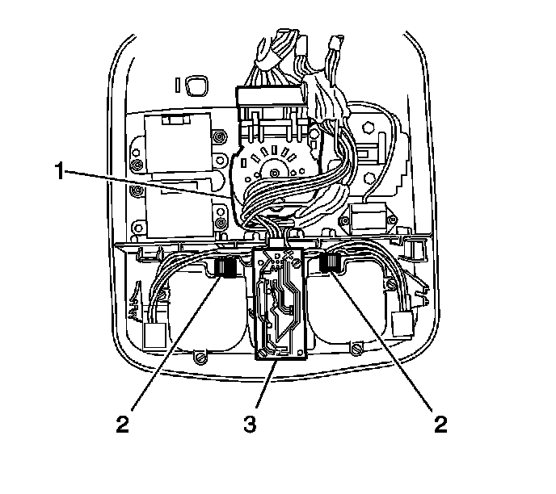

Sunroof / Moonroof Switch: Service and Repair
Sunroof Switch Replacement
Removal Procedure
1. Remove the front overhead console. Refer to Roof Console Replacement (Service and Repair) .

2. Remove the screws securing the sunroof switch (1) to the overhead console.
3. Disconnect the electrical connector.
4. Remove the switch.
Installation Procedure
1. Connect the electrical connector.
Notice: Refer to Fastener Notice (Fastener Notice) .
2. Install the screws securing the sunroof switch (1) to the overhead console.
Tighten the screws to 2 N.m (18 lb in).
3. Install the front overhead console. Refer to Roof Console Replacement (Service and Repair) .